scRNA-seq联合olink揭示肥胖骨关节炎患者新治疗靶点！
原文：https://mp.weixin.qq.com/s?__biz=MzAwMzIzOTk5OQ==&mid=2247527090&idx=1&sn=18f632c4e791f0b99d76416e3e0fa346&chksm=9b3c13e2ac4b9af4bab7c3a85e91236bb4814fd64c2c834cf661c16af6b1e6848b1767bdaa06#rd 合集：单细胞教程全收录 / 文献速递
一、写在前面
骨关节炎（Osteoarthritis，OA） 是一种退行性神经疾病，上下楼时关节隐隐作痛，或下过雨后关节僵硬伸不直，都是OA常见的临床症状，其致病因素复杂多样 且疾病异质性大 ，临床上仍未有有效的靶向治疗 方式，因此寻找有效的治疗靶点至关重要；同时肥胖会增加关节的负荷 ，体重增加和OA的发病率成正比的关系 ，提示肥胖在OA的发生发展中发挥着非常重要的作用。这篇文章中作者联合Olink蛋白组学检测，细胞代谢检测，转录组学和单细胞转录组学等方法，鉴定了四种功能性分子分型在体重肥胖 和正常OA患者关节滑膜组织中 的异质性，并经Luminex技术和免疫荧光进行了特定因子的鉴定，揭示了肥胖能够改变OA疾病中滑膜成纤维细胞(SFs)炎症状态，为临床上患者分类及靶向治疗提供了理论基础。****
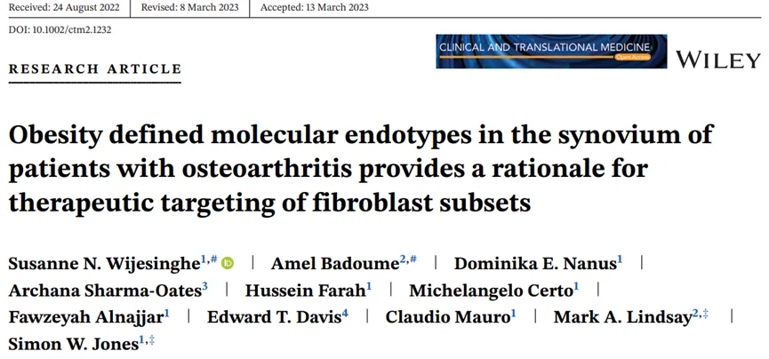
二、主要内容
- 1. 承重和肥胖条件下SFs分泌的促炎因子表型及SFs增殖率和代谢表型是不同的。
作者先前的研究发现，肥胖导致OA患者髋部关节滑膜成纤维细胞（SFs） 中促炎因子分泌增加，但是否仅仅是由承重增加而导致的呢？因此作者进行了更深入的研究，将患者按照BMI的大小分为肥胖组（OB）和正常组（NW），在此基础上再分为非承重（手部关节滑膜，NLB）组和承重（髋部，膝盖和脚部关节滑膜，LB）组。使用Olink免疫测定法对于免疫相关的96个蛋白进行了高通量，低样本体积的检测， 最终确定了27个数值在检测限范围内的标志物并发现其可分为三个类别，一些受承重调节例如CCL3和TSLP（Fig.1A）而另一些特定于肥胖如LIF，MCP1，MCP1 和MCP3(Fig.1B)或受关节部位不同而影响如CXCL1和IL-8等。以上结果表明与正常体重和非承重关节相比，肥胖和承重对于不同部位SFs细胞因子的分泌影响不同。
炎症状态下，由于炎症和关节破坏SFs通常显示增生表型，因此作者进一步检测了增生相关因子，不考虑解剖部位的情况下，OB组增殖率明显高于NW组（Fig.1C），然而非承重关节和承重关节对于SFs的增殖率并无明显差异（Fig.1D）。以上结果说明了肥胖极大地影响了SFs的增殖率，且主要是髋部和足部部位。
肥胖会导致严重的代谢并发症，并引发慢性炎症，因此作者通过seahors分析 进行了承重组和肥胖组SFs代谢水平（线粒体呼吸和糖酵解） 的检测，结果发现与非承重组相比，在TNF-α刺激下，承重组关节的ATP生成明显改变，而糖酵解没有变化（Fig.1E,F）。进一步检测基础状态下不同关节SFs中代谢表型的差异，结果显示髋部关节SFs代谢水平更高且ATP产生较高（Fig.1G）；但糖酵解速率并无明显差异（Fig.1G，H），但当使用TNF-α刺激后，髋部糖酵解水平升高，提示其更易受到促炎刺激（Fig.1H），表明承重关节对于促炎刺激更为敏感。
Fig.1
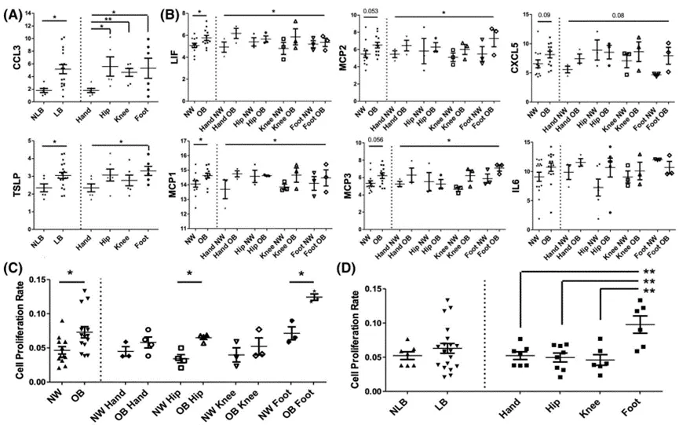
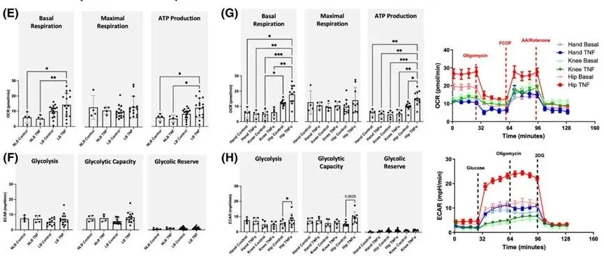
- 2. 肥胖对承重和非承重关节的SFs转录组表型的影响是不同的
在有了上述发现后，作者进一步通过RNA-seq 检测了各组SFs转录组差异 ，Heatmap图 展示了肥胖组和正常组的DEGs（Fig.2A），IPA功能注释 展示了不同DEG参与的信号通路（Fig.2B）且发现KRAS, PTPRR 和 NUPR1可能是肥胖的上游调节因子（Fig.2C）。与此同时，作者进行了无关肥胖的承重和非承重关节两组的RNA-seq，Heatmap图展示了两组的DEGs（Fig.2D）,IPA功能注释揭示其可能与‘RANK’, ‘IL-1’和‘IL-6’等炎症通路相关（Fig.2E,F）。将受肥胖和承重的DEG取交集后，发现同时受两者影响的基因共有14个，且其中有4个基因的表达模式是相似的（Fig.2G）。同时作者发现肥胖对于不同关节部位的影响是不同的，其中髋部(Fig.2I)，膝盖（Fig.2J）,足部（Fig.2K）的差异基因如图所示。以上结果显示肥胖对于转录组的影响是关节特异性的且与承重无关的（Fig.2L,M）。对于每个关节中不同的DEGs进行IPA功能注释，揭示了手部关节中 ‘Th1’, ‘IL-8’ 和‘STAT3’等信号通路发挥作用（Fig.2H）,髋部关节差异基因富集于‘CD27’ 和‘CD40’等骨关节炎相关通路（Fig.2I），而膝盖关节中的差异基因与‘IL-8’ 和‘IFN’信号通路显著相关（Fig.2J），足部关节的差异基因主要富集于CD40等骨关节炎和衰老相关通路(Fig.2K）。表明肥胖和承重对于关节的影响是不同的且肥胖对于不同部位的影响是特异的。
Fig.2
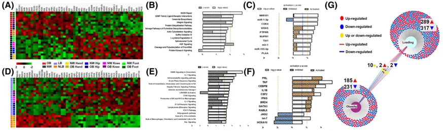
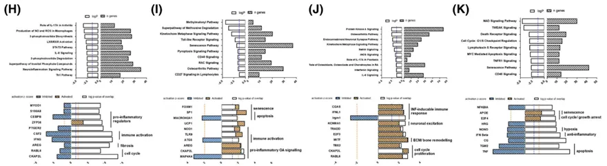
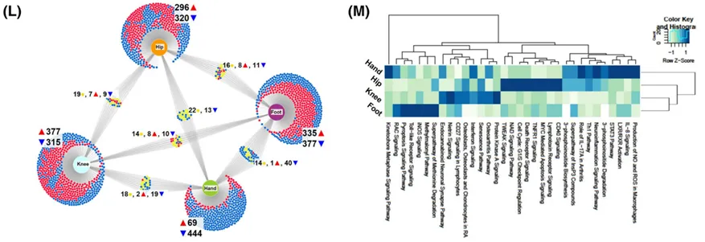
3. 在髋部OA中肥胖与不同的SF亚群相关。****
总的来说，上述结果发现肥胖对于 髋部关节的影响是最大的，因此作者经scRNA-seq 进一步针对髋部关节进行研究，尝试寻找其中关键的特异性SF亚群。结果共发现了8个SF亚群(Fig.3A,B），Heatmap图 展示了8个亚群中排名前10的差异基因(Fig.3C）。对确定的DEGs进行IPA功能注释，结果发现每个亚群具有特异的相关通路(Fig.3D)，这些亚群在功能上被分为四个功能内型，分别是活化成纤维细胞（细胞簇4和6)；免疫细胞招募者（细胞簇5和7)；应激成纤维细胞（细胞簇1和3)和增殖成纤维细胞（细胞簇2) ，其中应激成纤维细胞主要存在于正常体重组，而且增殖成纤维细胞存在于正常或肥胖的OA患者组(Fig.3D,E)。t-SNE和小提琴图展示了不同细胞簇的差异基因(Fig.3F),根据促炎因子的表达水平差异发现肥胖相关的SFs主要是活化和免疫招募成纤维细胞。****
Fig.3****
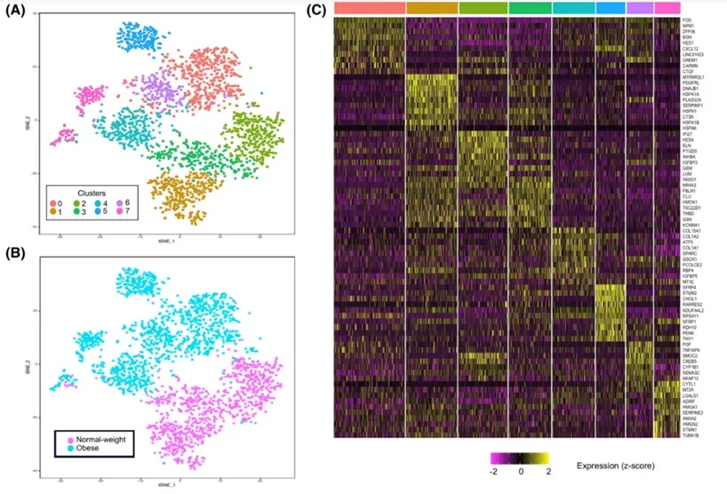
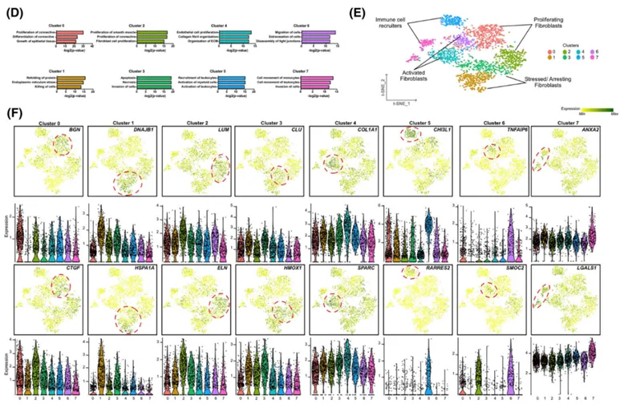
进一步的，作者经 免疫荧光技术对OB和NW两组患者SFs细胞簇的差异基因进行验证，结果发现NW组滑膜组织中能够检测到由FBLN1和THBD标记的细胞簇3（Fig.4A,B）；****
而由NPM1和CXCL12标记的细胞簇1定位于OB组患者的滑膜组织中 （Fig.4C,D）。****
Fig.4
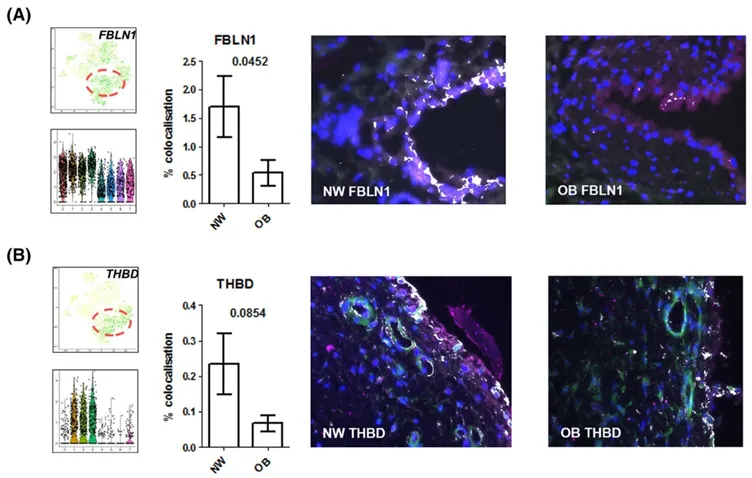
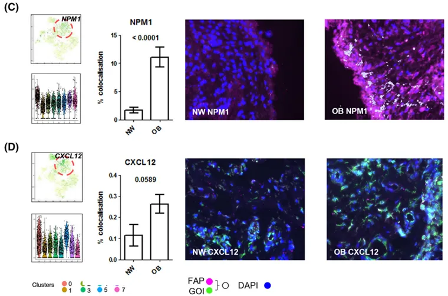
**4.**肥胖患者的炎性SF亚群可以通过转录调节因子MYC和FOS的表达差异来区分
最后，作者经拟时分析 对于OB和NW两组患者中SFs进行分析，以探究其具体的动态变化，分析结果显示转录调节因子MYC和FOS发生了明显的变化（Fig.5A）；其中MYC主要在NW组中表达，而FOS主要表达于OB组（Fig.5B）。同时作者发现INHBA和CHI3L1的mRNA和蛋白水平分别在NW组和OB组显示出时间表达动力学（Fig.5C,D）。与此同时，对于OA患者髋部关节的免疫荧光 进一步验证了MYC在NW组高于OB组，而FOS在OB组高于NW组（Fig.5E）。以上结果表明，OB患者的促炎SFs位于滑膜组织的下层和衬里层，可以通过c-Fos来标记，而NW患者的应激SFs仅存在于衬里层，可以通过c-Myc来区分。****
Fig.5
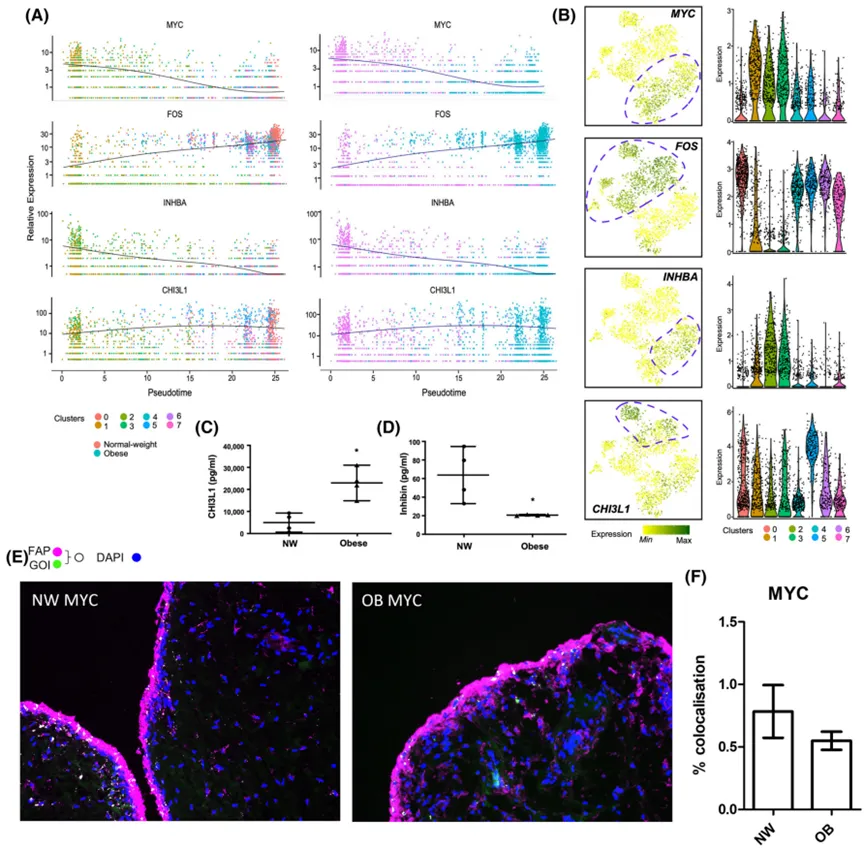
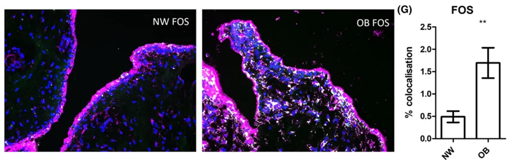
三、最后聊聊
综上所述**，** 作者联合了Olink蛋白组学检测，转录组学，单细胞转录组学和细胞代谢类型的检测，展示了肥胖和负重对于滑膜组织中成纤维细胞类型及基因表达的影响，临床上可以通过分子内型的检测从而对患者进行分类和靶向治疗。文中从生信分析到实验验证，理论基础夯实，逻辑紧密，让结论更具有可信性，是值得一看的好文章。引用：Wijesinghe SN, Badoume A, Nanus DE, Sharma-Oates A, Farah H, Certo M, Alnajjar F, Davis ET, Mauro C, Lindsay MA, Jones SW. Obesity defined molecular endotypes in the synovium of patients with osteoarthritis provides a rationale for therapeutic targeting of fibroblast subsets. Clin Transl Med. 2023 Apr;13(4):e1232. doi: 10.1002/ctm2.1232. PMID: 37006170; PMCID: PMC10068310.

如何联系我们

 公众号后台消息回复不便，这里给大家留一下领取资料及免费服务器(足够支持你完成硕博生涯的生信环境)的微信号 ，方便各位随时交流（别问在么，添加时直接说来意）。呼声很高的交流群 也建好了，欢迎大家入群讨论：
公众号后台消息回复不便，这里给大家留一下领取资料及免费服务器(足够支持你完成硕博生涯的生信环境)的微信号 ，方便各位随时交流（别问在么，添加时直接说来意）。呼声很高的交流群 也建好了，欢迎大家入群讨论：
大家可以阅读完这几篇之后添加给生信入门初学者的小贴士 如何搜索公众号过往发布内容
已有生信基地联系方式的同学无需重复添加

 您点的每个赞和在看，我都认真当成了喜欢
您点的每个赞和在看，我都认真当成了喜欢